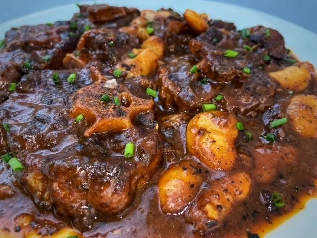

Oxtail Recipe

Insanely good oxtail stew
Deliciously rich oxtail stew recipe with oxtails and onions, parsnips, and carrots braised in red wine and stock. A wonderfully rich, savory, and comforting recipe.
Ingredients
- 2kg oxtail, cut into 1 inch cubes
- 1 tbsp vegetable oil
- 1 tsp salt
- 1/2 tsp black pepper
- 2 white onions, finely chopped
- 1 medium green pepper, chopped
- 2 large red tomatoes, finely chopped
- 2 tbsp flour
- 3 cloves garlic, chopped
- 1/2 tsp curry powder
- 1tbsp Royco Usavi or Bisto
- 1/2 tsp dried thyme
- 5 cups water
- fresh parsley (optional garnish)
Steps
- Put the oxtail in the pot, add salt, water, black pepper, garlic, and 1 onion.
- On high heat let the oxtail boil meat boil for 20minutes, then drain the broth.
- Lower the heat to medium. Add the oil and curry to the oxtail and brown it.
- Add the other onion as it browns, add the tomatoes and the green pepper
- Keep turning the meat so that the tomatoes get fully cooked (make them soft) and also so as to avoid burning the meat.
- Add the broth that you drained and let it simmer for 2-3hrs on medium heat or until the oxtail is soft
- Turn off heat and let sit for 15 minutes before serving. Garnish with the fresh parsley if desired.
Back to Home page